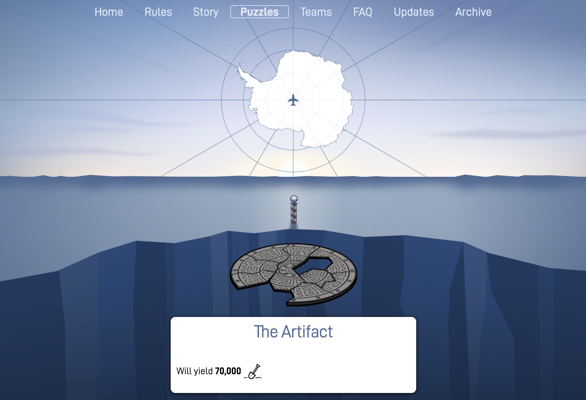
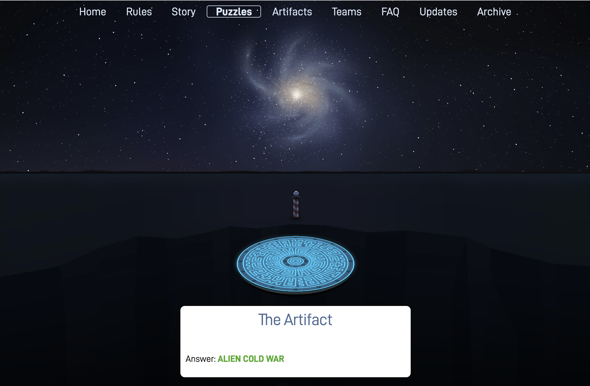
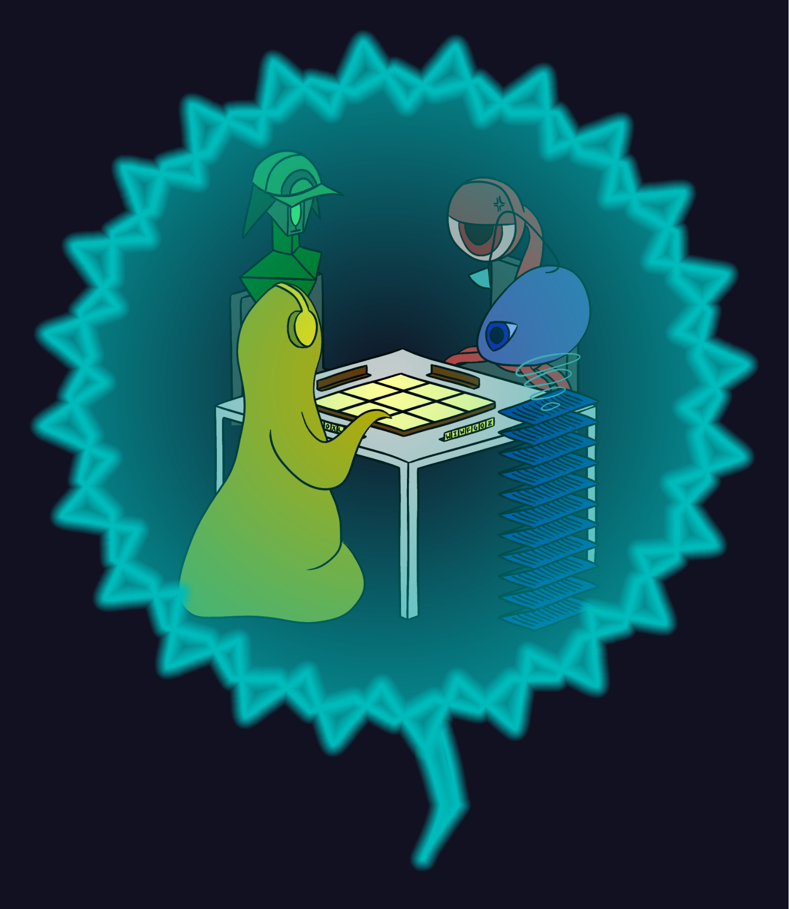
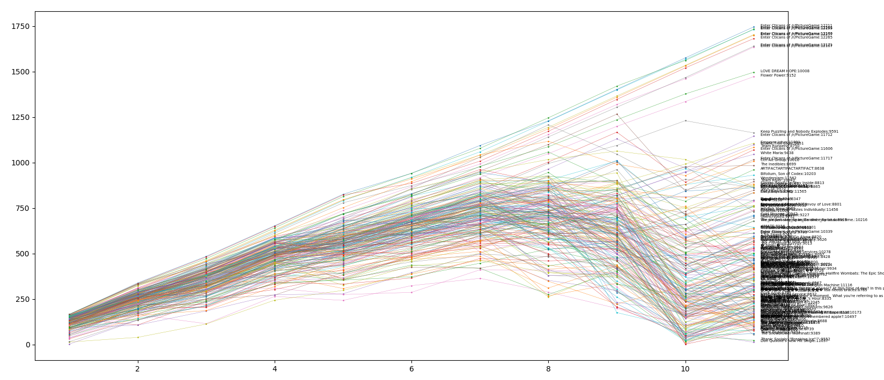

Wrap-Up
Congratulations to the 30 teams that finished the hunt, to Titanic Socials: "Breaking Ice"™ for finishing first, to the 70 teams that solved at least one main round meta, to the 258 teams that solved The Artifact, and to the 510 teams that solved at least one puzzle!
As usual, feel free to skip directly to the fun stuff!
Plot Summary
Teams started with an announcement about an artifact in Antarctica and rushed down to the South Pole to figure out what all the fuss was. Upon solving 10 (later 9 and then 8) of the puzzles, they pieced together The Artifact. It turned out to be about languages.

Upon solving The Artifact, teams were presented with a letter from a Galactic Nations peacekeeper, indicating that the ALIEN COLD WAR would be turning into an actual galactic war in ten short days, but if they could solve these puzzles, learn the Galactic (puflantu) language, and convince the Galactic Empires to communicate with one another again, it could be stopped.

Once they solved enough puzzles, solvers were able to temporarily regain contact with each of the four Galactic Empires and solve the puzzle of why they didn’t want to talk to each other any more. Each of these puzzles (the main round metas) required knowledge of the Galactic language, gleaned from artifacts unlocked through solving more puzzles. Extensive documentation about the language is available here.
- The Astrologers turned out to be IN OPPOSITION.
- The Archivists were suffering from MEMORY LOSS.
- The Animal Trainers needed to GO BE THE VERY BEST.
- The Artists had caught a bad case of LARYNGITIS.
After resolving each of these problems, teams were able to convince all four of the Galactic Empires to meet up for The Galactic Conference where they played out their peace negotiations over a game of Scrabble. When successful, they achieved WORD PEACE.

Fan art of the Galactic Conference submitted by Enter Cticans of /r/PictureGame
Writing the Hunt
Goals
We set some goals for the hunt at our very first planning meeting, on September 5th, 2018:
- Make a fun hunt for solvers
- Have a fun construction experience: let people express themselves creatively, not get too overworked.
- Somehow encourage interaction between teams, at least in a few puzzles but probably not hunt-wide
- Have a hunt that was comparable to last year in length or slightly shorter
- Continue to fill the niche of “large online puzzle hunt with an immersive experience”
- Keep the "intro round"
- Avoid large stopping points (e.g., walls of hard puzzles)
We think we succeeded at all but goals (2b) and (4). We’ll continue to work on those next year.
Design Philosophy + Structure
We wanted to design a hunt that was accessible to all sizes and skill levels of team. This is the primary reason for our “intro round”, but it also informed many of our decisions throughout the hunt writing process. We don’t want any puzzles to be inaccessible to teams because of prerequisite knowledge or skills, though in order to make a hunt the right difficulty for the most experienced teams, it would of course require some puzzle experience to solve the whole thing.
Next year, we hope to have an even better experience for smaller and less experienced teams - we’re thrilled that over 500 teams solved a puzzle, but we know we can always do better at thinking about that end of the spectrum, where most of the participants fall.
We also strived to have a wide variety of puzzle types, especially emphasizing interactive or nontraditional formats, and to make our puzzles feel unique (avoiding puzzles presented as purely a “list of clues” inspired the visual design for several puzzles, such as Courage and Purity)
Advicebergs and Answerbergs
On the first weekend of the hunt, we noticed a lot of teams seemed to be stuck on the intro round / the intro meta, and due to the unlock structure there was still a lot of time before they would get more puzzles. Responses to the first check-in email confirmed that many teams were feeling stuck. This motivated our decision to release the early “small” advicebergs that only worked on first-round puzzles.
Later on in the hunt, we feared that teams that might enjoy the metas would not have enough solves to be able to reach them; thus, we decided to release the Answerbergs. We don’t anticipate bringing them back next year, but we believe they were the right choice this year, especially because there were many long puzzles for which extra advicebergs would not have helped much with reducing the work.
Writing Process and Content
Theme
We decided early on that we wanted an exciting theme that would be “different” or “unique” in some way. Several options were discussed, and two made it to the final proposal stage. This theme (“xenolinguistics”) won the proposal vote by a fairly wide margin. We won’t discuss the alternate proposals here in case they return next year.
Metas
Once we decided on the Xenolinguistics theme, we finalized most of the structure soon after (the number of puzzles in the hunt, and the overlapping meta structure; that there would be “artifacts” from which the language, which would be useful for metas, could be learned; that few or no regular puzzles would use the language in order to preclude people who were not caught up to speed from not being able to work on puzzles).
We then held several weeks of meta brainstorming sessions, in which groups of 5ish people would discuss ideas until they became more fleshed out. The metameta came from the first such session, and then we designed the other metas to be able to fit into it.
By the end of November, we had 5 different main round meta proposals and 2-3 intro meta proposals depending on how you count. We had each meta summarized and voted on the proposals, and we chose the metas that you saw in the hunt.
At this point, we decided on answers for the four metas that would work as both transformations and as reasons that the alien empires couldn’t communicate. Then we decided on puzzle answers, working from hardest (The Animal Trainers) to easiest (The Archivists), so as to minimize strife caused by overlapping answers.
Once all four metas were constructed and tested (with the exception of The Artists, which was revised several more times and not finalized until January), we assigned answers to the puzzles and forgot about metas until the conlang construction was finished.
Puzzles
As with last year, we managed the puzzle-writing process using Puzzletron. In total, around 85 puzzle ideas (including metas) were proposed, to various degrees of completion. Most puzzles went through at least two rounds of testsolving and editing before going into production.
Testsolving generally happened during our weekly meetings, though many puzzles are also testsolved by individuals during their free time, or by small groups during the week that were organized on an ad-hoc basis.
Around 2 weeks before the hunt, we organized a group of testsolvers to attempt a “full-hunt testsolve”, with the goal of going through as much of the hunt as possible. We used their feedback and progress to iron out the last details of some puzzles, artifacts, and metas.
Conlang + Artifacts
The conlang construction started with several large group meetings in November. We decided on some phonology, word structure with respect to vowels, consonants and ' (bell sound), and some basics about verb morphology (e.g. infixing). This was a fairly daunting task as none of us had experience in conlanging.
After that point, most work on the conlang split off into a few devoted people (and meta authors) who worked on various small parts of the language they found interesting: the number system, noun classes, comparatives, word order, and specific morphemes (tense/negation). Eventually one person, for several weeks, took over writing the rest of the language and weaved these elements together by first learning how to properly write a conlang and then actually doing it.
In the theme proposal, we wanted to teach the language entirely through artifacts. Eventually, once the language was settled down sufficiently, we began artifact writing. However, this was a slow process. Artifact creators had to learn the language, use it (correctly!) to translate, and teach others who wanted to make artifacts. For a while, it was gated on the one language creator who was our source of truth for any language questions. We failed to anticipate both the gating and time to prepare artifacts, and thus were ill-prepared when the full-hunt testsolve group reached the point of needing more artifacts.
At this point, we ended up having to move a large amount of resources toward artifact-writing in the two weeks before the hunt, which meant we didn’t get as many testsolves on some of the later-written puzzles as we would have liked. The last artifacts were written in the days leading up to the hunt, and minor edits were made after the hunt had started. In addition, we did not completely reach our goal of teaching the language entirely through artifacts, as Textbook, Friendly Transmission, and (added during the hunt) Language Discoveries presented information more directly.
Hunt Operations
We generally had a few people online at any given time during the hunt, monitoring emails and hint requests. Over the course of the week we had around 20 people contribute to answering almost 3,000 hint requests and responded to around 500 emails ranging from check-ins, Geography Lesson submissions, and hint clarifications.
Reflections on the hunt
Difficulty/length
While we did not intend to write a larger hunt than last year, the hunt turned out to be substantially longer than we expected. One reason is that we underestimated the difficulty of several of our puzzles, especially compared to last year; perhaps the most egregious example of this was The Meta Puzzle, which we originally predicted was going to be hard but adjusted that prediction downwards when the first testsolving group got through it without too much trouble. Other puzzles whose difficulties we underestimated include Phone Lines, A Crossword, and Colors.
A more significant issue was the number of puzzles that were not particularly difficult in terms of ahas, but took a long time to do (such as Peaches, Cuspidation, or Galaxy Trucker): any individual one of such puzzles would likely have been good, but the combination of all of them made for a fairly intimidating and/or exhausting experience (this is a big reason why we decided to give out answerbergs as opposed to more hints).
One reason for this is that when testsolving, solvers are generally consuming puzzles at a leisurely pace, so we failed to account for fatigue or really consider the big picture. However, we think the biggest reason is that we simply didn’t think it would be an issue, mostly due to getting very lucky with this last year (where a few puzzles were very difficult, but with many shorter/less intimidating puzzles mixed in). We are now aware of the danger of having too many “long” puzzles and are confident we can avoid these issues in future years. If we continue to use a similar hunt structure, we will try our best to ensure that at least ~5-10 teams finish by the end of Sunday.
Puzzle balance
The balance of puzzle types in this hunt was slightly non-ideal, with multiple logic puzzles referencing somewhat niche topics and fewer difficult word puzzles and essentially no cryptics. While we do value a good balance of puzzle types, our writing process mostly consists of individual authors submitting ideas and developing/editing them independently. This worked fairly well last year (perhaps due to luck), but in the future we will make balance an explicit goal and, e.g., be more willing to shelve good puzzle ideas if we think they won’t fit as well in the overall context of the hunt.
That said, we are in general happy with the variety of puzzles that we did have, and especially with the quantity and variety of nontraditional puzzle types and presentations.
Conlang/metas
We knew from the beginning that having the whole meta structure depend on a conlang was a risky decision, but we hoped that it would be a fun experience for enough teams to be worth it. One of our goals each year is to do something new and avoid falling into a cookie-cutter (pun intended) format/structure.
We were glad to see that from the feedback, most solvers enjoyed learning the language at the beginning, such as figuring out general vocabulary and sentence structure. Feedback on learning the more complex parts of the language, like the various conjugations and declensions, was more mixed. When designing the language, we had to decide where we wanted to be on the complexity spectrum of “word-for-word replacement from English” (probably too boring and a lot of wasted potential) to “a real human language” (almost certainly impossible to learn with limited artifacts, difficult to catch up on from scratch). We made many tough decisions along these lines, but in the end it looks like we came up with something more complex than ideal. We hope that it was still a fun and unique experience, even if we overshot on the length/complexity front.
One thing that took us by surprise was that many teams solely focused on the puzzles until they had several metas unlocked, and then only really worked on the language/metas at that point. We had hoped for a more gradual language-learning experience, which was why we put the Astrologers meta and puzzles earlier in the hunt, but we could have made it clearer that the meta was solvable when unlocked and didn't depend on a lot of artifact learning.
On a more positive note, many teams said that they enjoyed translating the artifacts as a break from puzzles, which we were happy to see.
The Future
We plan to write a Galactic Puzzle Hunt 2020*. It will start on Friday, March 13, 2020 and likely run for two weekends, similar to this year’s schedule. We’ll finalize the logistical details at a later date.
*(unless we win Mystery Hunt in 2020, in which case our efforts will go towards preparing for 2021 Mystery Hunt, and we would likely not run GPH 2020 or GPH 2021; we have no clue how likely this is, and indeed, we’re still undecided as a team on how much we want to win)
Fun Stuff
Here’s some other fun things we created and compiled over the course of the hunt:
- GPH T-shirts! Now you can support us and sport us simultaneously.
- A compilation of some of our favorite songs and videos that you sent us for Geography Lesson.
- A playlist of questionably-related songs (warning: mild spoilers)
- A mini AMA based on the questions you submitted in our feedback form.
- A guide to the puflantu language with design notes
- A repository with all of the puflantu vocabulary used in the hunt
- A compilation of fun stories / things solvers sent us
Statistics
During and after the hunt, we put together several different things to visualize or better understand how teams were doing. Here are some of them:
- A spreadsheet with a list of notable winners and various puzzle-specific stats
- Big Board (the page we used to monitor teams’ global progress)
- Progress charts for the 30 teams who finished the hunt
- A complete guess log for the entire hunt (if you come up with any interesting statistics, please share them with us!)
- A general stats page with information on puzzle solves and hints used

Solves over time for the top 30 teams.

Time left after each round in Race for the Galaxy for finishing teams
{kind=link}
Credits
Editors: Colin Lu, Seth Mulhall, Nathan Pinsker, Rahul Sridhar, Anderson Wang, Jakob Weisblat, and Patrick Xia
Puzzle Authors: Phillip Ai, Josh Alman, Abigail Caron, Brian Chen, Lewis Chen, Andrew Hauge, Alan Huang, Lennart Jansson, Chris Jones, Ivan Koswara, DD Liu, Colin Lu, Seth Mulhall, Ian Osborn, Alex Pei, Nathan Pinsker, Jon Schneider, Rahul Sridhar, Charles Tam, Robert Tunney, Anderson Wang, Jakob Weisblat, Patrick Xia, Ben Yang, Dai Yang, Yannick Yao, and Leon Zhou
Web Developers: Alan Huang, Lennart Jannson, Chris Jones, and Jakob Weisblat
Artifact Authors: Andrew Hauge, Colin Lu, Seth Mulhall, Rahul Sridhar, Charles Tam, Robert Tunney, Anderson Wang, Jakob Weisblat, Patrick Xia
Conlangers: Charles Tam and Patrick Xia
Additional Test Solvers and Fact Checkers: Danny Bulmash, Lilly Chin, Andrew He, Damien Jiang, Bryan Lee, Xavid Pretzer, Catherine Wu, and Nick Wu